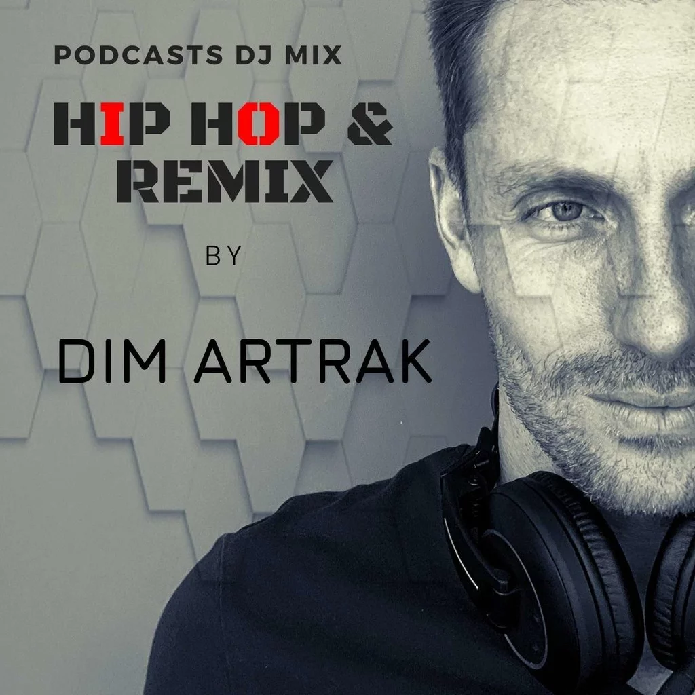

HiP HoP & Remix DiM ArtraK
Catégorie:
Music
Tags:
Hip-Hop, LifeStyle


Music
Hip-Hop, LifeStyle
Podcasteur: | DiM ArtraK |
Episodes: | 03 |
Description: |
Dj & Producteur depuis de nombreuses années, vous pouvez retrouver mes mixs et mes tracks sur: Instagram: dim_artrak Spotify, Itunes, Deezer, etc ...: DiM ArtraK Facebook: DiM ArtraK All of my Mixs Mixcloud: DiM ArtraK |